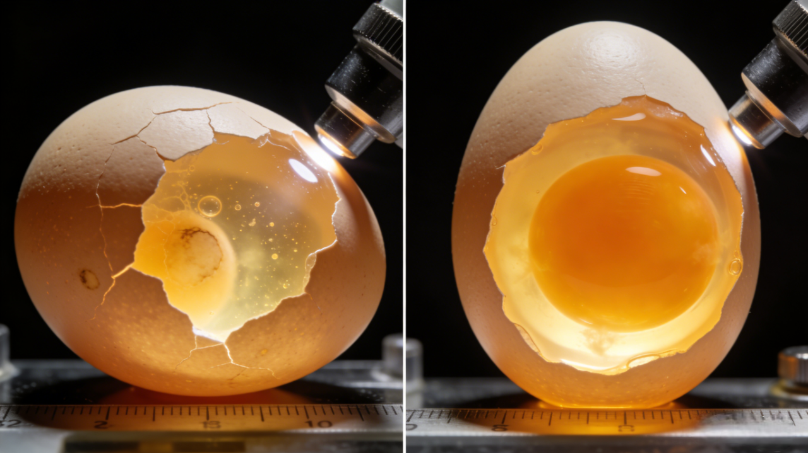
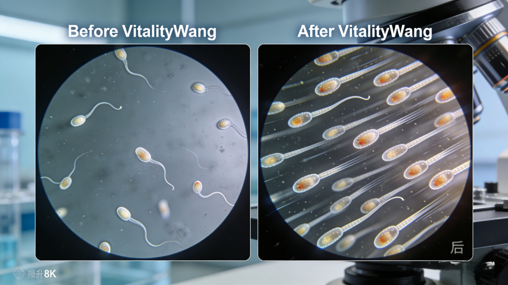
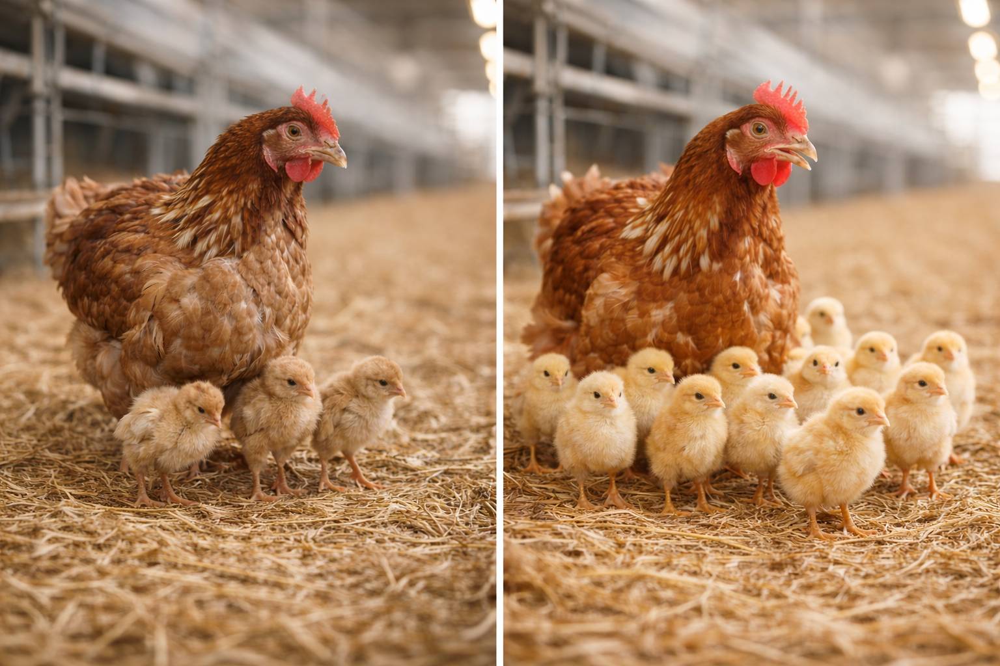

活力旺種雞性能提升方案
種公雞 × 種母雞 · 雙向優化
孵化率與健雛率全面提升，繁殖投資報酬率919%
一、台灣種雞產業基準數據
88-92%
平均受精率 種公雞
84-88%
平均孵化率 種母雞
90-94%
平均健雛率 種母雞
140-160顆
年產合格種蛋 種母雞

種蛋品質對比：左側劣質種蛋，右側優質種蛋
產業挑戰分析
1. 夏季繁殖障礙：熱緊迫導致受精率下降5-8%，孵化率下降3-5%
2. 種蛋品質不均：蛋殼質量、內部品質影響孵化成功率
3. 種公雞精液品質衰退：隨周齡增加，精液量與活力下降
4. 早期胚胎死亡率高：影響健雛率與雛雞均勻度
二、活力旺生理作用機轉
層級一：營養吸收與腸道健康 (基礎)
作用成分：精密複合酶製劑
生理機轉：
- 提升蛋白質消化率18-22%
- 改善腸道絨毛結構
- 減少腸道炎症
層級二：抗氧化與細胞保護 (核心)
作用成分：免疫調控肽 + 抗氧化複方
生理機轉：
- 激活Nrf2/ARE抗氧化通路
- 保護卵母/精子細胞膜
- 降低胚胎氧化壓力
層級三：生殖內分泌調控 (關鍵)
作用成分：代謝調控複方 (NAD+前體)
生理機轉：
- 提升卵巢粒線體功能
- 穩定FSH、LH、雌激素
- 改善睪丸萊氏細胞功能

種公雞精子活力對比：左25% / 右85%
三、成本參數與添加方案

活力旺可無縫整合至現有飼料系統
NTD 600
活力旺單價/公斤
1 公斤
每噸飼料添加量
NTD 0.6
每公斤飼料成本增加
NTD 0.015
每顆種蛋成本增加
種雞飼養成本計算 (1,000種母+100種公)
| 種母雞每日採食量 | 125 公克/隻 |
| 種公雞每日採食量 | 140 公克/隻 |
| 每日總飼料消耗 | (1,000×0.125)+(100×0.14)=139 公斤 |
| 每日活力旺添加成本 | NTD 83.4 |
| 每月添加成本 | NTD 2,502 |
| 每年添加成本 (44週) | NTD 25,690 |
四、繁殖性能提升與經濟效益評估

活力旺方案：受精率92%↑ / 孵化率89%↑
預期性能改善目標
| 關鍵指標 | 行業基準 | 活力旺預期 | 提升幅度 |
|---|---|---|---|
| 種蛋受精率 | 88-92% | 92-95% | +3-4% |
| 入孵蛋孵化率 | 84-88% | 88-92% | +4-5% |
| 健雛率 | 90-94% | 94-97% | +4-5% |
| 種蛋合格率 | 92-95% | 95-97% | +3-4% |
| 產蛋高峰期維持 | 28-32週 | 32-36週 | 延長4週 |

孵化率對比：標準85% → 活力旺91%

雛雞整體健康對比

雛雞細節：左發育不良 / 右活力充沛
經濟效益計算 (1,000隻種母雞)
+4,400 顆
額外可孵化種蛋
+3,960 隻
額外健康雛雞
NTD 25
每隻雛雞淨利潤
| 效益項目 | 年度效益 |
|---|---|
| 受精率提升效益 | +90,000 |
| 孵化率提升效益 | +135,000 |
| 健雛率提升效益 | +27,000 |
| 生產週期延長效益 | +9,600 |
| 年度總效益 | +261,600 |
| 活力旺年度成本 | -25,685 |
| 年度淨利潤增加 | +235,915 |

ROI 406% · 每母雞年增利124 NTD
投資報酬率分析
919%
每投入 NTD 1，創造 NTD 9.19 淨收益
回收期 1.3 個月 · 成本效益比 1 : 9.19
五、不同養殖規模經濟效益
| 養殖規模 | 種母雞 | 年度淨利增加 | ROI |
|---|---|---|---|
| 小型 | 500 | NTD 117,958 | 919% |
| 中型(基準) | 1,000 | NTD 235,915 | 919% |
| 大型 | 5,000 | NTD 1,179,575 | 919% |
| 統進統出場 | 10,000 | NTD 2,359,150 | 919% |
規模效益說明
線性擴展特性：成本與效益同比例增長，ROI維持919%
六、實施建議與風險管理
驗證期 (8週)
100母+10公
NTD 3,120
擴展期 (16週)
500母+50公
NTD 12,480
全面導入
全場種雞
下一生產週期
風險對沖策略
分階段驗證、效果監控、隨時可停止使用；60%效果仍達551% ROI
七、結論：種雞生產的價值革命
919%
投資報酬率
NTD 235,915
千隻場年增淨利
+4-5%
孵化率提升
1.3月
投資回收期
每投入 NTD 1 元飼料成本，創造 NTD 9.19 元淨收益。從「最低飼料單價」轉向「最高繁殖報酬」。